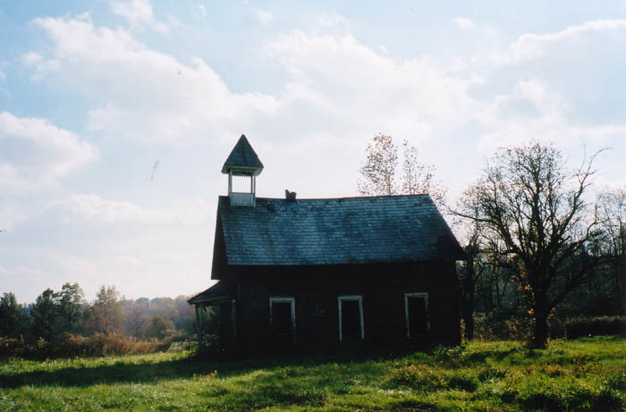
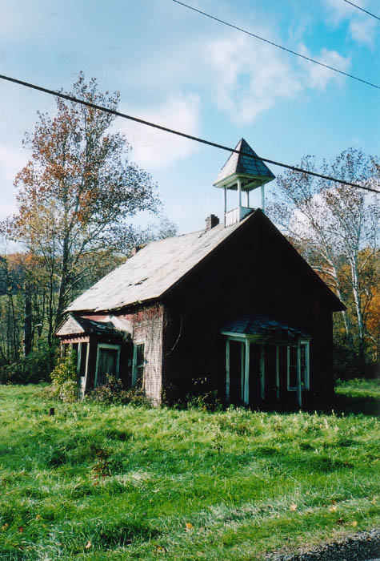
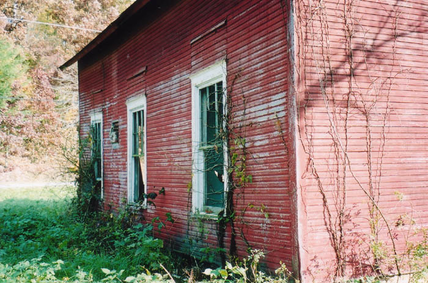
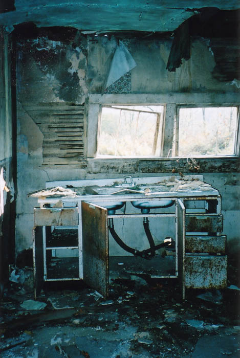
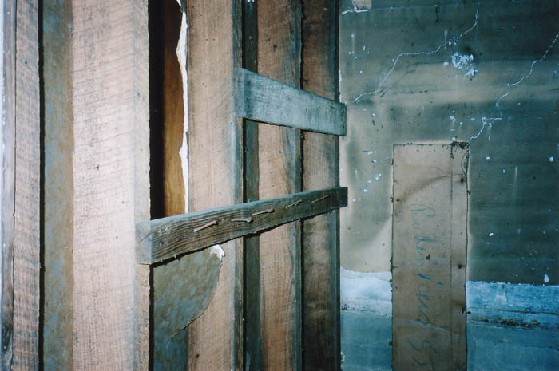
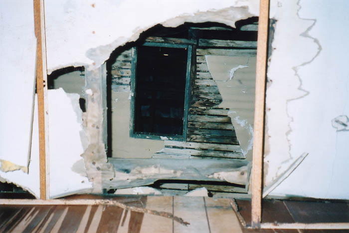

This disintegrating old schoolhouse stands on Route 586 in Licking County, near the Muskingum County line. There are no nameplates or carved cornerstones to indicate what it was once called or what town it once served, but it is located in Perry Township near the ghost towns of Perryton and Reform. It's a safe guess that kids from these now-nonexistent towns once attended school here.

Katydid and I happened upon this place while driving up and down 586 several thousand times looking for the driveway to Baughman Park, which is a forgotten pocket park in Licking County which is full of overgrown statuary. When we finally discovered Baughman Park we found it guarded by a mounted security keypad and a metal gate, and only got a distant look at one statue before a Longaberger security guy drove out and told us to leave. The Longaberger Corporation scares me because I can't figure out how they can be so large and evil when all they do is make wicker picnic baskets. Apparently they have manufacturing facilities in Baughman Park now, and don't even provide scheduled tours. But finding this schoolhouse turned the trip into something less than a total bust.

There seems to have been a trend in rural areas after these one-room schoolhouses began to die off where people turned them into private homes. I've seen it several times in little abandoned schools, and this one is no exception. The first and clearest indication that somebody lived here is the busted kitchen sink at the back of the building.

The schoolhouse is in such bad shape that you can look through giant holes in the walls, so it's hard to estimate much about it. From the light fixtures we figure it was occupied as recently as at least the 1960s. We did happen to see some school-ish things inside, though, such as this row of coat hooks made out of a two-by-four and thick nails.

Our final look before leaving the school was up into the old belfry, which is almost certainly bereft of its bell. From this angle all it looks like is an attic crawlspace.

If you want to check this schoolhouse out for yourself, take 586 north from Route 16 in Licking County and watch the left side of the highway.
Back